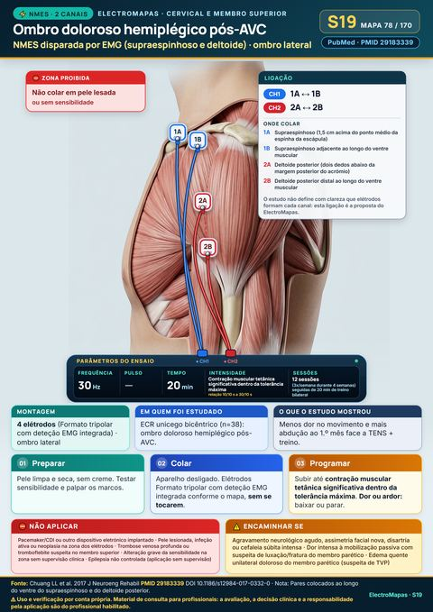
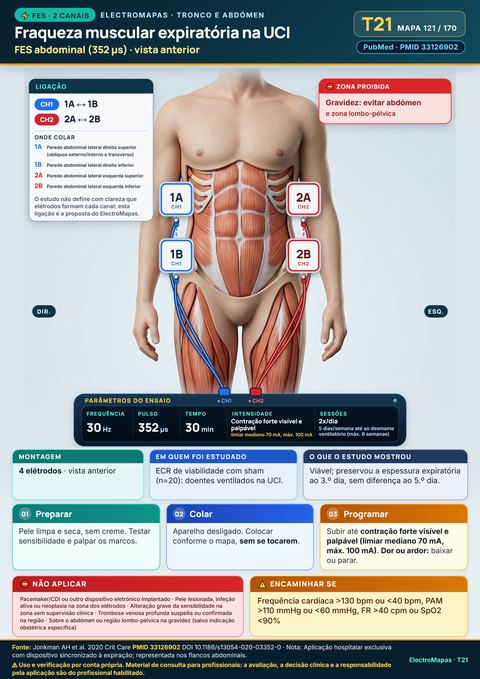
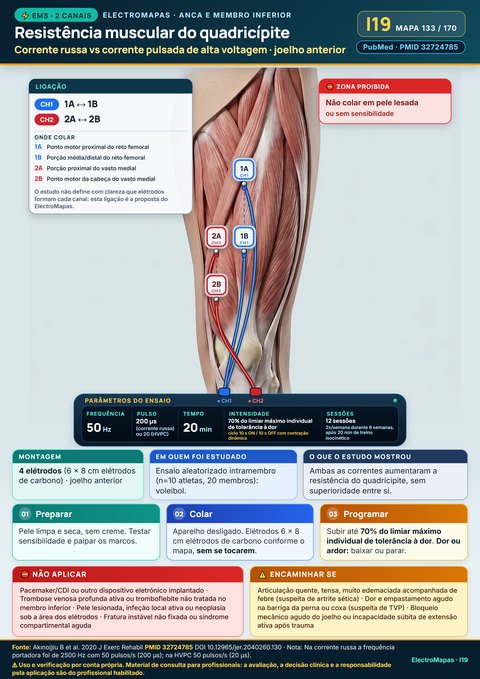

Só os 70 mapas novos, por 9,97 €
Se 19,90 € é mais do que querias agora, leva só os 70 mapas novos, sem o Atlas de 601 páginas.
37neurológicos: AVC, lesão medular, Parkinson, paralisia cerebral
9UCI, respiratório e internamento
7pós-operatório e dor aguda
4desporto e força
3gravidez e pós-parto
10dor, neuropatia, pé e punho






Só os mapas
70 mapas novos ElectroMapas
- 70 mapas novos, cada um com a sua ficha prática
- Estudo publicado (PMID/DOI) no rodapé de cada mapa
- Mapas imprimíveis
- Os teus 20 mapas de presente continuam teus
9,97 €pagamento único · IVA incluído
Cerca de 0,14 € por mapa.
Sim, quero os 70 mapas · 9,97 €Pagamento seguro na Hotmart · acesso imediato no Clube FisioVanta
MB WAYMultibancoCartãoApple PayGoogle Pay
15DIAS
Garantia de 15 dias. Experimenta durante 15 dias. Caso não corresponda às tuas expectativas, podes pedir o reembolso na Hotmart dentro do prazo de garantia aplicável.